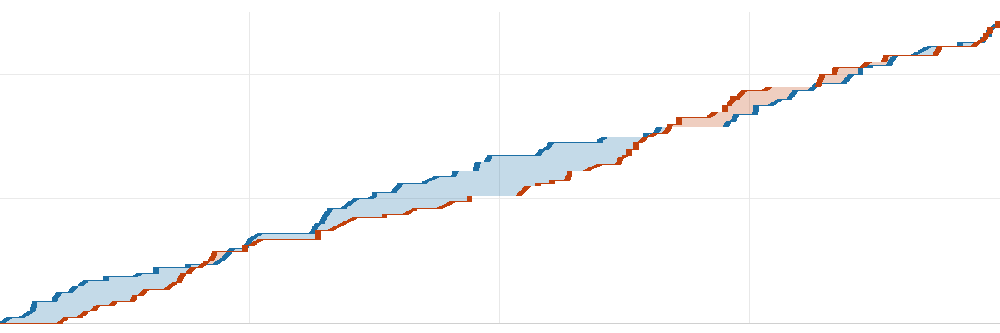
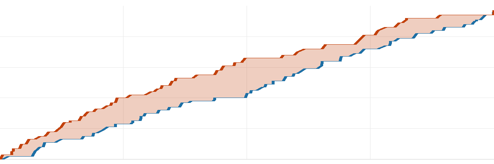

球不落·NBA 每日战报
2026-11-21美国时间
共 6 场 ｜ 每行格式：客队 比分 : 比分 主队
今天 6 场，最狠的一刻出在凯尔特人 96-97 国王：基根·穆雷剩 5 秒投进反超球，此后对手再没得分，他们一度落后 13 分。
焦点球星3 人
詹姆斯21分6板 6助·76人 胜 雄鹿
文班亚马50分19板 1助砍下 50 分·马刺 胜 鹈鹕
杨瀚森（未出场）开拓者 负 尼克斯
今日炸裂表现上榜1 人
砍下 50 分希罗50分11板 7助· 雄鹿 负 76人
今日破纪录2 条
球星1 条
希罗 · 生涯新高 50 分· 雄鹿 129-132 76人
球队1 条
国王 · 终结8 连败· 凯尔特人 96-97 国王
推荐比赛5 场
夯准绝杀今日最胶着基根·穆雷剩 5 秒投进反超球，此后对手再没得分
| 1 | 2 | 3 | 4 |
| 分节 | 27-25 | 27-16 | 13-35 | 29-21 |

凯尔特人国王横轴为比赛进程
国王一度落后 13 分，翻盘赢 1 分。
| 凯尔特人 | 保罗·乔治19分8板5助·康利19分4板2助·克塔15分7板1助 |
| 国王 | 小达里厄斯·阿卡夫21分6板8助·亨特20分6板2助·萨博尼斯15分17板4助 |
|
命中率 |
三分 |
篮板 |
助攻 |
失误 |
| 凯尔特人 |
34 | 22 | 52 | 22 | 11 |
| 国王 |
41 | 27 | 52 | 16 | 20 |
北京 11:00 开球 ｜ 凯尔特人 11-5 ｜ 国王 2-14
顶级值得看 · 交替领先 14 次
| 1 | 2 | 3 | 4 |
| 分节 | 30-29 | 29-31 | 33-38 | 37-34 |
全场交替领先 14 次、打平 7 次，76人最后阶段才拉开 3 分。
| 雄鹿 | 希罗50分11板7助·伯里斯26分8板4助·库兹马12分5板1助 |
| 76人 | 恩比德26分17板9助·詹姆斯21分6板6助·安芬尼·西蒙斯18分1助 |
|
命中率 |
三分 |
篮板 |
助攻 |
失误 |
| 雄鹿 |
48 | 36 | 49 | 25 | 8 |
| 76人 |
51 | 32 | 42 | 33 | 4 |
北京 02:00 开球 ｜ 雄鹿 1-16 ｜ 76人 14-3
夯值得看 · 压哨绝杀绝杀布里奇斯压哨投进反超球
| 1 | 2 | 3 | 4 |
| 分节 | 23-40 | 20-26 | 29-15 | 24-16 |

开拓者尼克斯横轴为比赛进程
尼克斯只赢 1 分，最后时刻才定胜负。
| 开拓者 | 克林根22分13板4助·阿夫迪亚20分9板5助·利拉德15分3板3助 |
| 尼克斯 | 布伦森30分7板5助·沙梅特20分1板3助·布里奇斯12分2板3助 |
|
命中率 |
三分 |
篮板 |
助攻 |
失误 |
| 开拓者 |
42 | 29 | 47 | 21 | 14 |
| 尼克斯 |
43 | 45 | 42 | 25 | 13 |
北京 08:30 开球 ｜ 开拓者 10-6 ｜ 尼克斯 10-6
今日最佳一球
布里奇斯 压哨绝杀
开拓者 96-97 尼克斯 · 第四节结束
人上人值得看 · 只差 10 分
| 1 | 2 | 3 | 4 |
| 分节 | 26-23 | 18-29 | 30-26 | 26-32 |
全场交替领先 8 次、打平 6 次，独行侠最后阶段才拉开 10 分。
| 快船 | 布鲁克·洛佩兹21分6板·八村塁19分8板1助·加兰16分1板2助 |
| 独行侠 | 欧文25分6板4助·弗拉格22分6板8助·小沃尔特·克莱顿16分5板1助 |
|
命中率 |
三分 |
篮板 |
助攻 |
失误 |
| 快船 |
38 | 33 | 53 | 21 | 16 |
| 独行侠 |
41 | 39 | 53 | 23 | 9 |
北京 09:00 开球 ｜ 快船 4-11 ｜ 独行侠 9-7
人上人今日最大逆转
| 1 | 2 | 3 | 4 |
| 分节 | 34-28 | 12-28 | 16-27 | 33-21 |
灰熊末节打出 33-21，但前面落后太多，最终仍差 9 分。
| 灰熊 | 考沃德23分7板2助·泰·杰罗姆18分4板6助·斯图尔特10分2板1助 |
| 森林狼 | 麦克丹尼尔斯25分5板4助·多孙穆19分2板2助·库明加16分4板2助 |
|
命中率 |
三分 |
篮板 |
助攻 |
失误 |
| 灰熊 |
43 | 25 | 36 | 17 | 17 |
| 森林狼 |
58 | 32 | 39 | 24 | 23 |
北京 09:00 开球 ｜ 灰熊 12-5 ｜ 森林狼 12-5
其余 1 场按开球时间
拉完了今日最平淡
| 1 | 2 | 3 | 4 |
| 分节 | 29-32 | 16-29 | 21-28 | 25-25 |
马刺最多领先 29 分，最终赢 23 分。
| 鹈鹕 | 费尔斯29分5板4助·普尔25分3板2助·奎恩15分15板 |
| 马刺 | 文班亚马50分19板1助·卡斯尔19分3板6助·瓦塞尔10分3板2助 |
|
命中率 |
三分 |
篮板 |
助攻 |
失误 |
| 鹈鹕 |
37 | 23 | 53 | 11 | 14 |
| 马刺 |
45 | 34 | 53 | 30 | 15 |
北京 09:00 开球 ｜ 鹈鹕 5-13 ｜ 马刺 14-3
明日焦点
雷霆@热火
北京时间 11月23日 07:00 ｜ 热火主场
两队战绩咬在一起（10胜6负 / 9胜6负）
战绩 10胜6负 / 9胜6负
另外这几场
凯尔特人@勇士北京时间 11月23日 09:30
明天全联盟 7 场，上述是值得关注场次
球不落 ｜ 每天一份 NBA 战报，只写场上发生的事
本文基于公开赛事数据独立撰写，与 NBA 及任何转播平台无关联。
比赛日 2026-11-21（美国时间）｜ 数据来源：ESPN